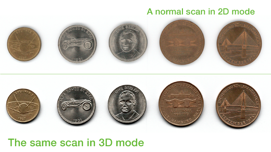

WideTEK® Flatbed Scanners
A Lasting Brand in Professional Flatbed Scanner Solutions
For over 13 years, Image Access has manufactured color flatbed scanners designed for fast scans and optimal image resolution, to fit just about any application requirements.
At CeBIT 2001, Image Access presented the first prototype of a fast Scan2Net® scanner. Designed as a flatbed, the scanning speed was remarkable -- less than three seconds for a color scan of a DIN A2 document at 300 dpi resolution. The WideTEK FBA2 was the first scanner to utilize the innovative Scan2Net® technology from Image Access, enabling the world´s first communication with a scanner purely via a TCP/IP network interface. No additional hardware or interface cards, driver installations and configurations were required.
By 2003, Image Access was selling the WideTEK FB-A2 worldwide and had refreshed the physical design of the scanner. High resolution, color fidelity and especially superior scanning speeds helped the WideTEK® FB-A2 quickly become a well known product in the wide format flatbed market worldwide.
In March 2008, in what was the largest product launch in the company´s history – a new generation flatbed scanner was introduced, the WideTEK® 25. The WideTEK® 25 was, and still is the fastest self service wide format flatbed color scanner on the market. Even so, Image Access continued to perfect the design and in 2012, a completely redesigned version of the WideTEK 25 was released, featuring a very small footprint, 35% smaller than the previous model and many other improvements.
In March 2014, Image Access introduced the WideTEK 12 -- the smaller brother of the WideTEK 25. Both of these flatbeds now feature the new and unique 3D scanning mode, producing 3D image results so detailed that they look absolutely real. This revolutionary 3D scanning mode opened many opportunities in the printing and industrial inspection markets. Smaller and more compact, faster and with new LED illumination, the WideTEK flatbed scanners are truly unique.
